head(Marriage)Workshop 1 - Exploring Categorical Variables
Goals
- Extracting various types of subsets of a given data set
-
Drawing simple barplots using
barplotto show the distribution of a categorical variable -
Using
pieto draw pie charts to represent proportions
Manipulating data: Extracting a subset
The Marriage dataset (available on the Ultra page) contains the marriage records of 98 individuals in Mobile County, Alabama from the late 1990s.
Looking at the first few rows of the data, we can see the data contains a lot of variables, some categorical, some numerical, some dates, and some other junk.
| bookpageID | appdate | ceremonydate | delay | officialTitle | person | dob | age | race | prevcount | prevconc | hs | college | dayOfBirth | sign |
|---|---|---|---|---|---|---|---|---|---|---|---|---|---|---|
| B230p539 | 1996-10-29 | 1996-11-09 | 11 | CIRCUIT JUDGE | Groom | 2064-04-11 | 32.60274 | White | 0 | NA | 12 | 7 | 102 | Aries |
| B230p677 | 1996-11-12 | 1996-11-12 | 0 | MARRIAGE OFFICIAL | Groom | 2064-08-06 | 32.29041 | White | 1 | Divorce | 12 | 0 | 219 | Leo |
| B230p766 | 1996-11-19 | 1996-11-27 | 8 | MARRIAGE OFFICIAL | Groom | 2062-02-20 | 34.79178 | Hispanic | 1 | Divorce | 12 | 3 | 51 | Pisces |
| B230p892 | 1996-12-02 | 1996-12-07 | 5 | MINISTER | Groom | 2056-05-20 | 40.57808 | Black | 1 | Divorce | 12 | 4 | 141 | Gemini |
| B230p994 | 1996-12-09 | 1996-12-14 | 5 | MINISTER | Groom | 2066-12-14 | 30.02192 | White | 0 | NA | 12 | 0 | 348 | Saggitarius |
| B230p1209 | 1996-12-26 | 1996-12-26 | 0 | MARRIAGE OFFICIAL | Groom | 1970-02-21 | 26.86301 | White | 1 | NA | 12 | 0 | 52 | Pisces |
While we usually always start looking at all the data in a data set at once, we very often will want to focus on a particular set of data points (such as marriages after a particular date, or only the brides’ records) from a data frame. We can do so using the [ and ] characters.
The data set (in R these objects are called data frames) is effectively a matrix - in the mathematical sense - so it can be treated as a grid of data values, where each row is a data point and each column a variable. We can use this idea to extract parts of the data set by selecting particular rows or columns. For example, to extract the 10th row in the data, we can type
Marriage$prevcount [1] 0 1 1 1 0 1 1 1 0 3 1 1 0 0 1 0 0 0 1 1 1 1 1 1 1 0 0 0 2 0 0 2 0 2 0 0 1 1
[39] 1 0 2 0 0 0 2 1 0 1 5 0 0 0 1 0 1 1 0 0 1 0 1 0 0 1 1 0 0 3 1 2 2 0 2 1 2 0
[77] 0 0 0 0 3 0 1 0 0 1 1 1 0 3 0 0 0 1 3 1 2 0The comma here is important - anything after the comma indicates which columns we want to extract. Here we leave it blank, which returns all the columns. Alternatively, we could specify specific columns by name or number. Extending this idea, typing
y <- Marriage[c(3,6,9,12), 5:10]will create a new data frame consisting of columns 5 to 10 of the 3rd, 6th, 9th and 12th rows of the Marriage data frame, all saved to a new variable called y. This can be useful when you want to regularly work with a particular subset of data and want to save typing.
We can also use a logical test to extract only those rows which match a particular condition. For example, to get only the marriage records of those with more than 1 previous marriage we could type
Marriage[Marriage$prevcount>1,]Or all the marriages officiated by a judge:
Marriage[Marriage$officialTitle == "MINISTER",]Note the use of == with two = signs - this indicates a test for equality, rather than an assignment of one variable to another.
We can apply the same techniques to extract elements of a vector, only now we drop the , in the [] as a vector only has a length. So, the 10th recorded value of age could be found by typing:
Marriage$age[10][1] 45.75342Barcharts and Piecharts
The barplot is useful for summarizing categorical data. Continuing with the Marriage data, let’s look at who officiated at these weddings - as indicated by the officialTitle variable. If we look at the first few values in the officialTitle variable, we find:
Marriage$officialTitle[1:10] [1] CIRCUIT JUDGE MARRIAGE OFFICIAL MARRIAGE OFFICIAL MINISTER
[5] MINISTER MARRIAGE OFFICIAL MARRIAGE OFFICIAL MARRIAGE OFFICIAL
[9] MARRIAGE OFFICIAL MINISTER
9 Levels: BISHOP CATHOLIC PRIEST CHIEF CLERK CIRCUIT JUDGE ... REVERENDWe can see that there are a variety of different officials. Notice also that below the data is a line labelled Levels - here R is being helpful and listing all of the possibilities for this particular categorical variable. To visualise the distribution we must find the counts (or proportions) of each in the data set.
Before doing so, which do you think would be most (least) common?
Now we use the xtabs function to do the counting of the different genders before plotting:
xtabs(~officialTitle, data=Marriage) ## this makes the table of counts for the officialTitle variable in the Marriage data setofficialTitle
BISHOP CATHOLIC PRIEST CHIEF CLERK CIRCUIT JUDGE
2 2 2 2
ELDER MARRIAGE OFFICIAL MINISTER PASTOR
2 44 20 22
REVEREND
2 The syntax is a little odd here, note the use of the ~ (tilde) sign, which you may recognise from fitting linear regressions with lm. The variable name to the right of the ~ is the one we want summarising as counts.
Did this agree with what you expected?
We can then pass this summary table to the barplot function for plotting. Since we’ll be working with this table for a while, we can also save it to a variable to save repetition.
offs <- xtabs(~officialTitle, data=Marriage) ## save the table to `offs`
barplot(offs, col='skyblue')
Unfortunately, not all of our category labels are displayed due to the restricted space. We can make the labels perpendicular to the axis with the optional argument las=2, which improves things enough to be readable:
barplot(offs, las=2, col='skyblue')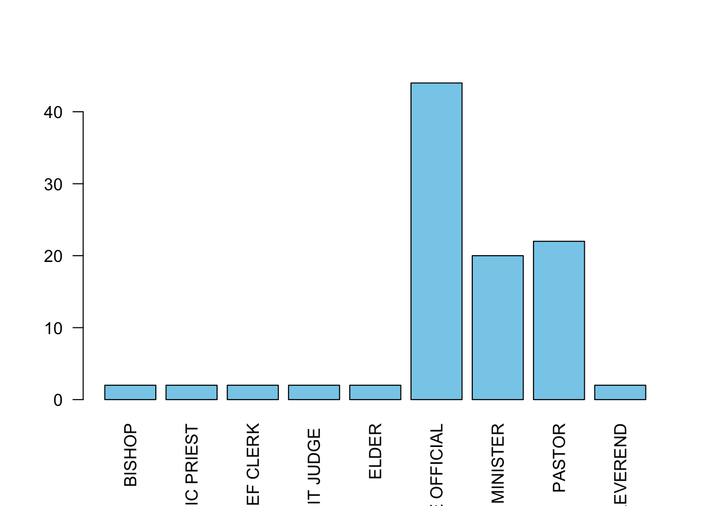
Note that some data sets may give you the counts of the categories directly and you can skip the call to xtabs, so it is always important to look at your data before plotting.
Like the other plotting functions we have seen, we can customise this with axis labels and colours to fill the bars. The barplot also supports the following additional arguments to customise the plot:
names- use this to pass a vector of labels for each barhoriz- set toTRUEto show a horizontal barplot. Defaults toFALSEand a vertical presentationwidth- use this to supply a vector of values to specify the widths of the barsspace- use this to supply a vector of values to specify the spacing between bars
Pie charts
The many issues with pie charts notwithstanding, generating a pie chart is relatively easy with the function pie. Note that the pie chart emphasises showing the data as proportions of the whole, rather than separate counts.
pie takes the same data input as the barplot, and can be supplied with labels, and given custom colours for the wedges. We’ll stick with the defaults for now, but feel free to experiment.
pie(offs)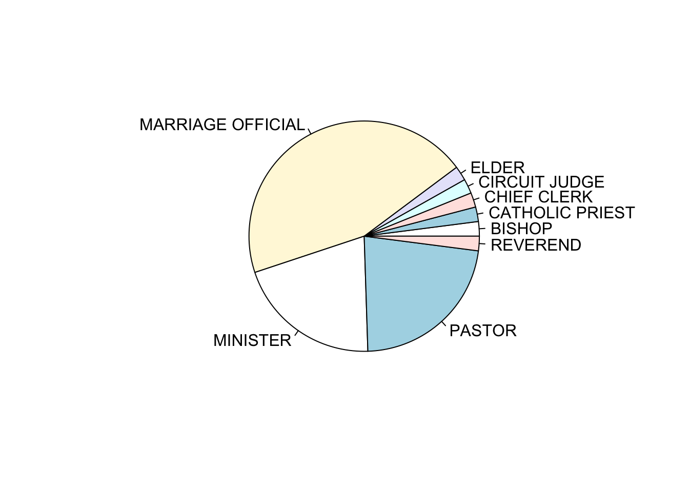
If your goal is compare each category with the the whole (e.g., what portion of weddings are officiated by a Bishop compared to all participants), and the number of categories is small, then pie charts may work for you. However, the best alternative to a piechart is the barchart, but if you really want to show proportions of a whole via area, then a treemap is a better choice (see below).
Challenge
This is your first data visualisation challenge. To start it simple, we’ll just do a recap of bar charts and pie charts. On your assignment on JupyterHub you will
- Create a barchart of the counts for the categorical variable sign in the
Marriagedataset. - Create a piechart of the same counts.
- Use the par() command to visualise the barchart and the piechart side by side.
A refresher on how the par() command works
R makes it easy to combine multiple plots into one overall graph, using either the par or layout functions.
With the par function, we specify the argument mfrow=c(nr, nc) to split the plot window into a grid of nr x nc plots that are filled in by row.
layout function.
Solution of the Challenge
datacount <- xtabs(~sign, data=Marriage) ## save the table to `offs`
barplot(datacount, las=2, col='red')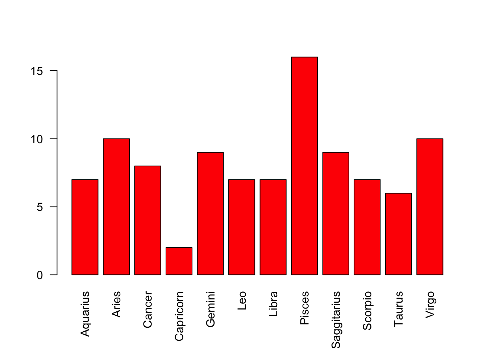
pie(datacount)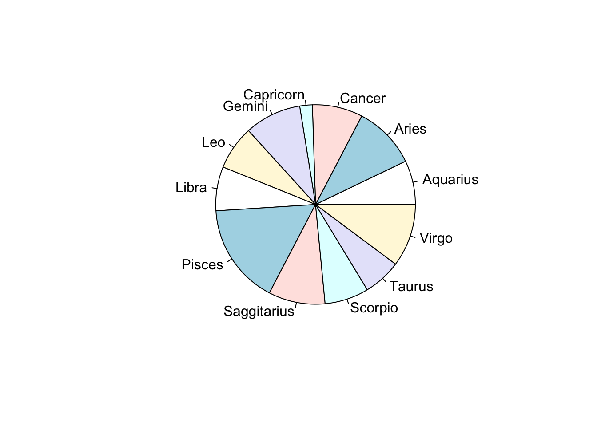
par(mfrow=c(1,2))
barplot(datacount, las=2, col='red')
pie(datacount)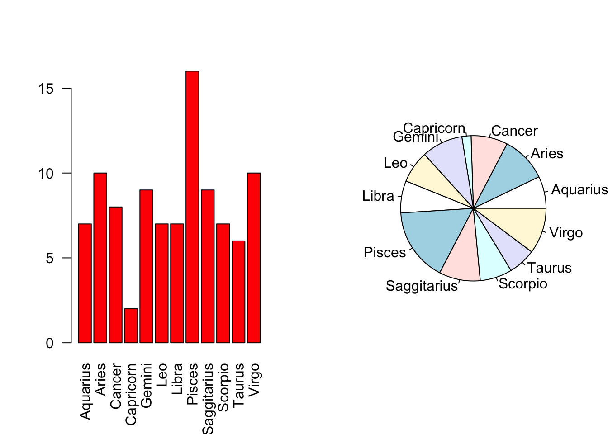
Data analysis: British Election survey data
In many surveys there is a string of questions to which respondents give answers on integer scales from, say, 1 to 5. This is so commonplace that one such scale even has a name - the Likert scale.
The beps dataset includes seven questions put to 1525 voters in the British Election Panel Study for 1997-2001. One question was on a scale from 1 to 11, one from 0 to 3, and the rest were from 1 to 5.
The leaders of the main political parties at the time were Tony Blair for Labour (the Prime Minister at the time), William Hague for the Conservatives, and Charles Kennedy for the Liberal Democrats. Each surveyed individual assessed each party leader on a scale of 1 to 5 (5=best).
- Load the
bepsdata you can find on Ultra. Use theheadfunction to get a quick look at the first few rows of the data to see what the variables are and how they are represented. - Let’s begin with the party leader data:
- Split your plot display to show a single row of three plots.
- Draw a barplot of each of the party leader’s ratings as contained in the three variables
Blair,HagueandKennedy. Don’t forget to call thextabsfunction to summarise the data before plotting. - Colour your barplots by the corresponding party colours (‘red’, ‘blue’, and ‘orange’ respectively.).
- Can you see any similarities in the distributions of the assessments of
BlairandHague? How would you interpret these patterns? - What do you find about the assessments of
Kennedy? - Repeat the plots using pie charts - which plots do you find easier to read and interpret?
head(beps) vote age economic.cond.national economic.cond.household Blair
1 Liberal Democrat 43 3 3 4
2 Labour 36 4 4 4
3 Labour 35 4 4 5
4 Labour 24 4 2 2
5 Labour 41 2 2 1
6 Labour 47 3 4 4
Hague Kennedy Europe political.knowledge gender
1 1 4 2 2 female
2 4 4 5 2 male
3 2 3 3 2 male
4 1 3 4 0 female
5 1 4 6 2 male
6 4 2 4 2 malepar(mfrow=c(1,3))
barplot(xtabs(~Blair,data=beps),col='red')
barplot(xtabs(~Hague,data=beps),col='blue')
barplot(xtabs(~Kennedy,data=beps),col='orange')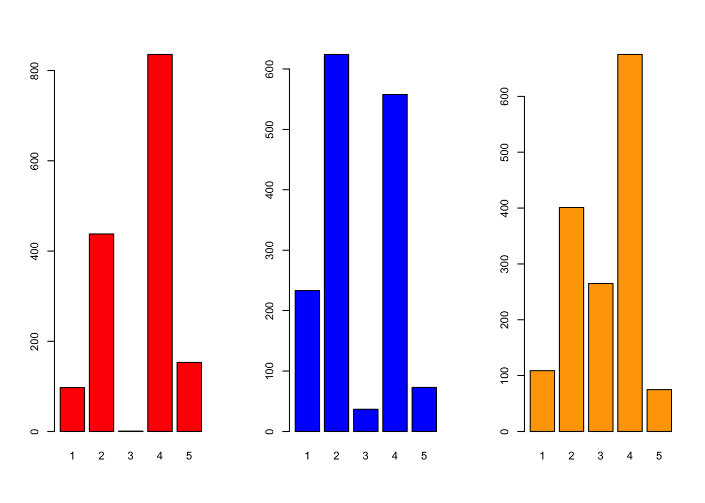
## Blair and Hague are very polarised - either v popular or v not, rarely in the middle at '3'
## Kennedy is less polarised, more middle/positivepar(mfrow=c(1,3))
pie(xtabs(~Blair,data=beps))
pie(xtabs(~Hague,data=beps))
pie(xtabs(~Kennedy,data=beps))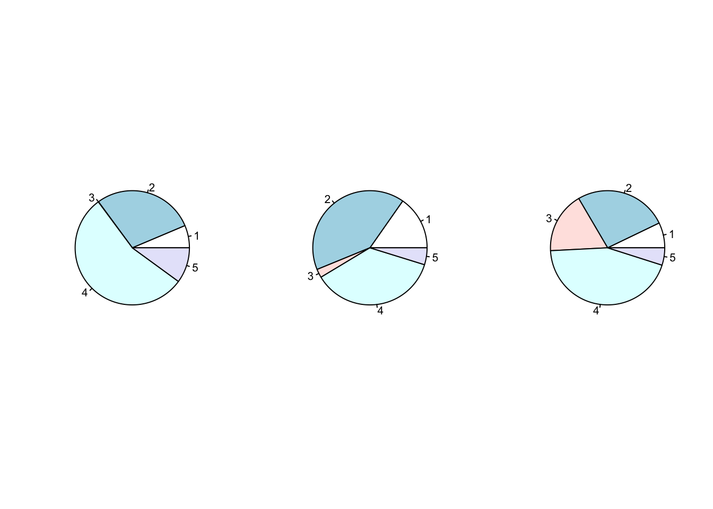
# pie give us information on the breakdown of the ratings, but not super helpful when it comes to comparisonsIn addition to assessing the party leaders, two further variables concerned Europe. The first asked the respondents to quantify their knowledge of the parties’ policies on European integration from low knowledge (0) to high knowledge (3), and the second measures the individuals attitudes to European integration from 1 to 11, where higher values are more Eurosceptic.
- First, we investigate the respondents knowledge of the parties’ policies on Europe as contained in the
political.knowledgevariable. - Then we investigate the
Europevariable representing individual attitudes towards Europe. Do any features stand out? - The data set also contains a column representing the voting intentions of the individuals surveyed in the
votevariable. We are going to plot the voting intentions.
## Political knowledge of party's European policy
barplot(xtabs(~political.knowledge,data=beps),col='forestgreen')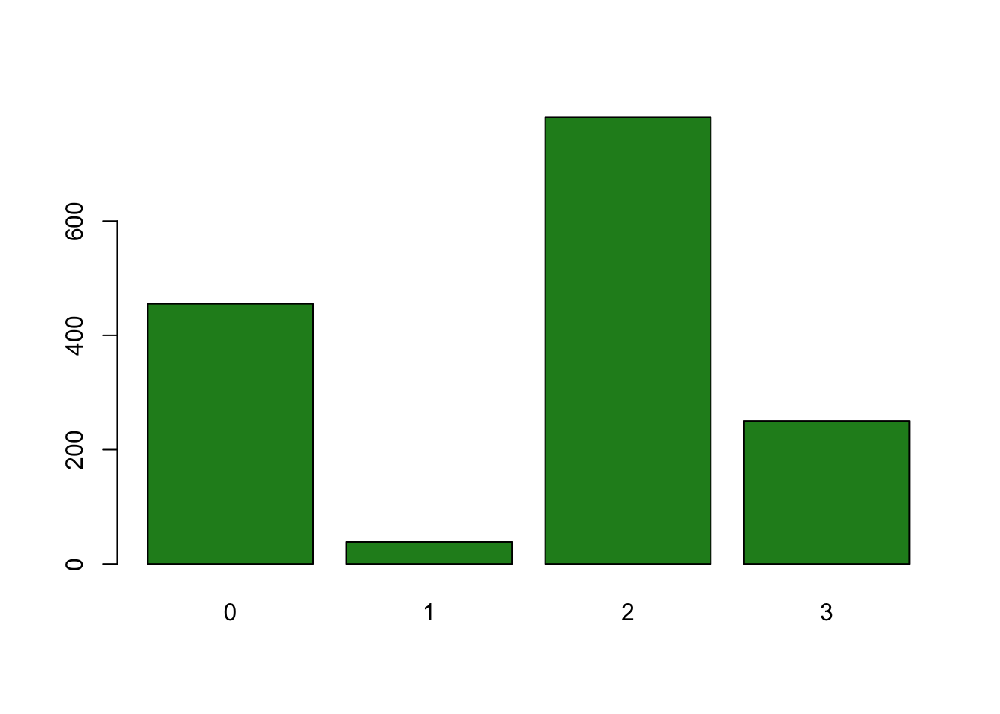
## many 0s and 2s - again, quite split between 'none' and 'some' knowledge of European policy## Attitudes towards European integration
barplot(xtabs(~Europe,data=beps),col=c('thistle'))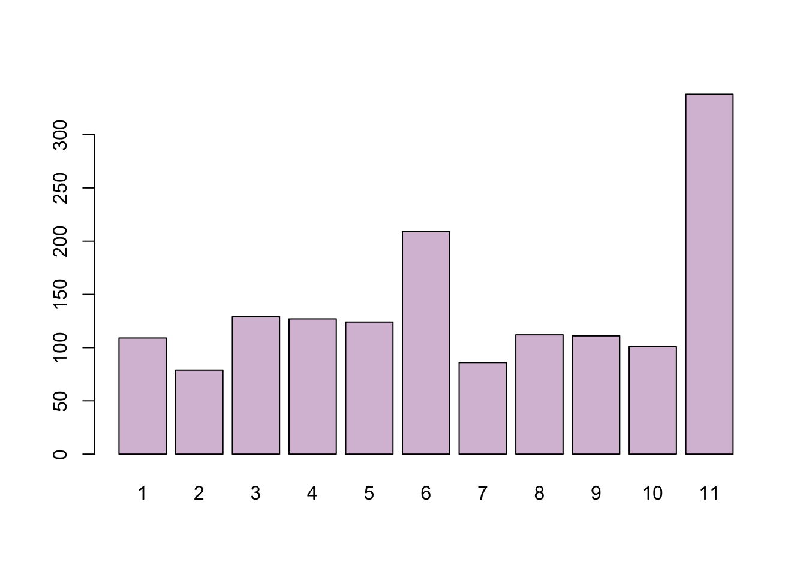
## Note: 1=pro europe, 11=europsceptic.
## BIG spike on 11 so strong Eurosceptic sentiment in the sample, with a lesser spike at a neutral position of 6.
## Noticeably no strong pro-European sentiment at the time## Voting intentions
barplot(xtabs(~vote,data=beps),col=c('blue','red','orange'))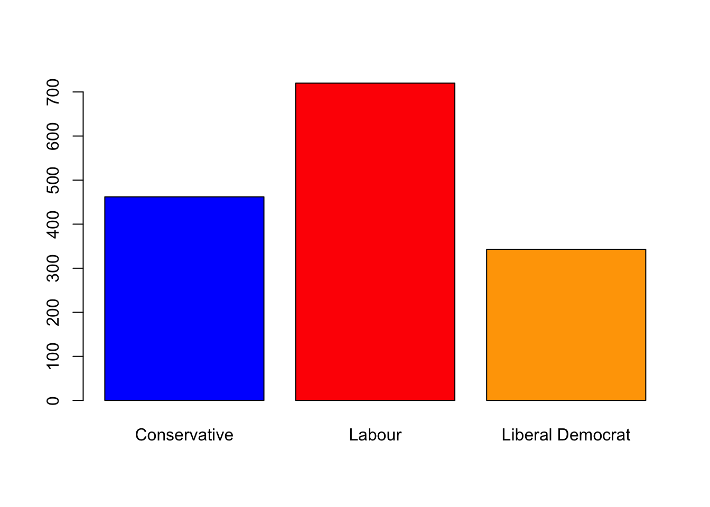
## strong Labour support - not surprising as Blair is during his first term as PM
pie(xtabs(~vote,data=beps),col=c('blue','red','orange'))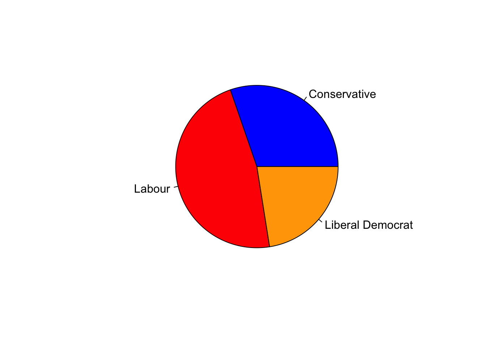
## this is probably a good use of a pie chart, with few categories and an easy obvious comparisonChallenge
- Now, let’s dig a little deeper and think about how attitudes to Europe may differ between the different party voters:
- Before doing anything - think a little about what you expect to see.
- Now, split the plot window into three, extract the data corresponding to those individuals who intend to
voteforLabour, and plot their attitudes to Europe, using party colours as above. Add amainplot label to indicate the party. - Repeat for
ConservativeandLiberal Democratvoters. - What features do you see? Are there any surprises, or does this confirm what you expected?
Click for solution
par(mfrow=c(1,3))
barplot(xtabs(~Europe,data=beps[beps$vote=="Labour",]),col='red')
barplot(xtabs(~Europe,data=beps[beps$vote=="Conservative",]),col='blue')
barplot(xtabs(~Europe,data=beps[beps$vote=="Liberal Democrat",]),col='orange')
## Conservatives are very eurosceptic, and almost never pro-Europe
## Labour is a mix of either slightly pro/neutral, and strongly against
## LibDem is also similar to Labour - though surprisingly (given recent years) less pro-European